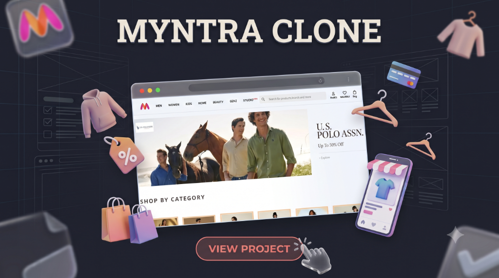

Myntra Clone
Created a front-end e-commerce interface inspired by Myntra, focusing on clean page layout, product showcases, navigation bar structure, and responsive mobile-first viewing.
Key Functionality:
- Recreated header navigation with search bar, categories, and shopping utilities.
- Structured promotional banners and responsive "Shop by Category" card layouts.
- Hands-on practice with modern CSS Flexbox alignment and Grid systems.